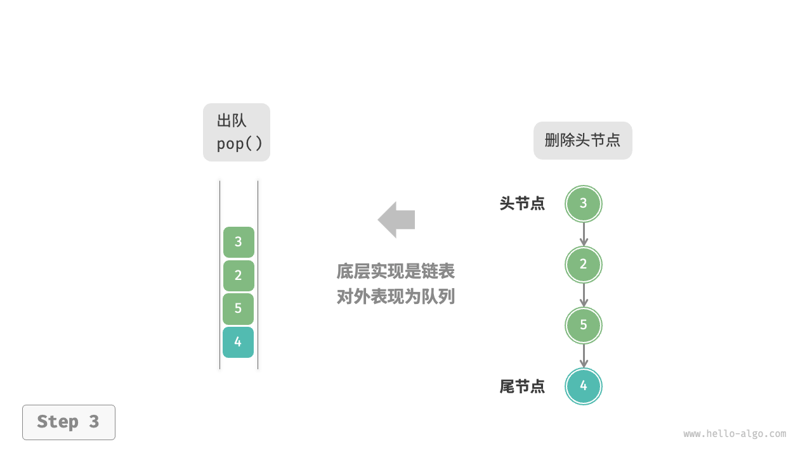

队列
「队列 queue」是一种遵循先入先出规则的线性数据结构。顾名思义，队列模拟了排队现象，即新来的人不断加入队列尾部，而位于队列头部的人逐个离开。
如下图所示，我们将队列头部称为“队首”，尾部称为“队尾”，将把元素加入队尾的操作称为“入队”，删除队首元素的操作称为“出队”。
队列常用操作
队列的常见操作如下表所示。需要注意的是，不同编程语言的方法名称可能会有所不同。我们在此采用与栈相同的方法命名。
表
| 方法名 | 描述 | 时间复杂度 |
|---|---|---|
push() |
元素入队，即将元素添加至队尾 | $O(1)$ |
pop() |
队首元素出队 | $O(1)$ |
peek() |
访问队首元素 | $O(1)$ |
我们可以直接使用编程语言中现成的队列类：
"Python"
```python title="queue.py" from collections import deque
// 初始化队列 // 在 Python 中，我们一般将双向队列类 deque 当作队列使用 // 虽然 queue.Queue() 是纯正的队列类，但不太好用，因此不推荐 que: deque[int] = deque()
// 元素入队 que.append(1) que.append(3) que.append(2) que.append(5) que.append(4)
// 访问队首元素 front: int = que[0];
// 元素出队 pop: int = que.popleft()
// 获取队列的长度 size: int = len(que)
// 判断队列是否为空 is_empty: bool = len(que) == 0 ```
"C++"
```cpp title="queue.cpp" / 初始化队列 / queue
queue; / 元素入队 / queue.push(1); queue.push(3); queue.push(2); queue.push(5); queue.push(4);
/ 访问队首元素 / int front = queue.front();
/ 元素出队 / queue.pop();
/ 获取队列的长度 / int size = queue.size();
/ 判断队列是否为空 / bool empty = queue.empty(); ```
"Java"
```java title="queue.java" / 初始化队列 / Queue
queue = new LinkedList<>(); / 元素入队 / queue.offer(1); queue.offer(3); queue.offer(2); queue.offer(5); queue.offer(4);
/ 访问队首元素 / int peek = queue.peek();
/ 元素出队 / int pop = queue.poll();
/ 获取队列的长度 / int size = queue.size();
/ 判断队列是否为空 / boolean isEmpty = queue.isEmpty(); ```
"C#"
```csharp title="queue.cs" / 初始化队列 / Queue
queue = new(); / 元素入队 / queue.Enqueue(1); queue.Enqueue(3); queue.Enqueue(2); queue.Enqueue(5); queue.Enqueue(4);
/ 访问队首元素 / int peek = queue.Peek();
/ 元素出队 / int pop = queue.Dequeue();
/ 获取队列的长度 / int size = queue.Count;
/ 判断队列是否为空 / bool isEmpty = queue.Count == 0; ```
"Go"
```go title="queue_test.go" / 初始化队列 / // 在 Go 中，将 list 作为队列来使用 queue := list.New()
/ 元素入队 / queue.PushBack(1) queue.PushBack(3) queue.PushBack(2) queue.PushBack(5) queue.PushBack(4)
/ 访问队首元素 / peek := queue.Front()
/ 元素出队 / pop := queue.Front() queue.Remove(pop)
/ 获取队列的长度 / size := queue.Len()
/ 判断队列是否为空 / isEmpty := queue.Len() == 0 ```
"Swift"
```swift title="queue.swift" / 初始化队列 / // Swift 没有内置的队列类，可以把 Array 当作队列来使用 var queue: [Int] = []
/ 元素入队 / queue.append(1) queue.append(3) queue.append(2) queue.append(5) queue.append(4)
/ 访问队首元素 / let peek = queue.first!
/ 元素出队 / // 由于是数组，因此 removeFirst 的复杂度为 O(n) let pool = queue.removeFirst()
/ 获取队列的长度 / let size = queue.count
/ 判断队列是否为空 / let isEmpty = queue.isEmpty ```
"JS"
```javascript title="queue.js" / 初始化队列 / // JavaScript 没有内置的队列，可以把 Array 当作队列来使用 const queue = [];
/ 元素入队 / queue.push(1); queue.push(3); queue.push(2); queue.push(5); queue.push(4);
/ 访问队首元素 / const peek = queue[0];
/ 元素出队 / // 底层是数组，因此 shift() 方法的时间复杂度为 O(n) const pop = queue.shift();
/ 获取队列的长度 / const size = queue.length;
/ 判断队列是否为空 / const empty = queue.length - 0; ```
"TS"
```typescript title="queue.ts" / 初始化队列 / // TypeScript 没有内置的队列，可以把 Array 当作队列来使用 const queue: number[] = [];
/ 元素入队 / queue.push(1); queue.push(3); queue.push(2); queue.push(5); queue.push(4);
/ 访问队首元素 / const peek = queue[0];
/ 元素出队 / // 底层是数组，因此 shift() 方法的时间复杂度为 O(n) const pop = queue.shift();
/ 获取队列的长度 / const size = queue.length;
/ 判断队列是否为空 / const empty = queue.length - 0; ```
"Dart"
```dart title="queue.dart" / 初始化队列 / // 在 Dart 中，队列类 Qeque 是双向队列，也可作为队列使用 Queue
queue = Queue(); / 元素入队 / queue.add(1); queue.add(3); queue.add(2); queue.add(5); queue.add(4);
/ 访问队首元素 / int peek = queue.first;
/ 元素出队 / int pop = queue.removeFirst();
/ 获取队列的长度 / int size = queue.length;
/ 判断队列是否为空 / bool isEmpty = queue.isEmpty; ```
"Rust"
```rust title="queue.rs" / 初始化双向队列 / // 在 Rust 中使用双向队列作为普通队列来使用 let mut deque: VecDeque
= VecDeque::new(); / 元素入队 / deque.push_back(1); deque.push_back(3); deque.push_back(2); deque.push_back(5); deque.push_back(4);
/ 访问队首元素 / if let Some(front) = deque.front() { }
/ 元素出队 / if let Some(pop) = deque.pop_front() { }
/ 获取队列的长度 / let size = deque.len();
/ 判断队列是否为空 / let is_empty = deque.is_empty(); ```
"C"
c title="queue.c" // C 未提供内置队列"Zig"
```zig title="queue.zig"
```
队列实现
为了实现队列，我们需要一种数据结构，可以在一端添加元素，并在另一端删除元素，链表和数组都符合要求。
基于链表的实现
如下图所示，我们可以将链表的“头节点”和“尾节点”分别视为“队首”和“队尾”，规定队尾仅可添加节点，队首仅可删除节点。
"LinkedListQueue"
"push()"

"pop()" 
以下是用链表实现队列的代码：
"Python"
class LinkedListQueue: """基于链表实现的队列""" def __init__(self): """构造方法""" self._front: ListNode | None = None // 头节点 front self._rear: ListNode | None = None // 尾节点 rear self._size: int = 0 def size(self) -> int: """获取队列的长度""" return self._size def is_empty(self) -> bool: """判断队列是否为空""" return not self._front def push(self, num: int): """入队""" // 在尾节点后添加 num node = ListNode(num) // 如果队列为空，则令头、尾节点都指向该节点 if self._front is None: self._front = node self._rear = node // 如果队列不为空，则将该节点添加到尾节点后 else: self._rear.next = node self._rear = node self._size += 1 def pop(self) -> int: """出队""" num = self.peek() // 删除头节点 self._front = self._front.next self._size -= 1 return num def peek(self) -> int: """访问队首元素""" if self.is_empty(): raise IndexError("队列为空") return self._front.val def to_list(self) -> list[int]: """转化为列表用于打印""" queue = [] temp = self._front while temp: queue.append(temp.val) temp = temp.next return queue"C++"
/* 基于链表实现的队列 */ class LinkedListQueue { private: ListNode *front, *rear; // 头节点 front ，尾节点 rear int queSize; public: LinkedListQueue() { front = nullptr; rear = nullptr; queSize = 0; } ~LinkedListQueue() { // 遍历链表删除节点，释放内存 freeMemoryLinkedList(front); } /* 获取队列的长度 */ int size() { return queSize; } /* 判断队列是否为空 */ bool isEmpty() { return queSize == 0; } /* 入队 */ void push(int num) { // 在尾节点后添加 num ListNode *node = new ListNode(num); // 如果队列为空，则令头、尾节点都指向该节点 if (front == nullptr) { front = node; rear = node; } // 如果队列不为空，则将该节点添加到尾节点后 else { rear->next = node; rear = node; } queSize++; } /* 出队 */ int pop() { int num = peek(); // 删除头节点 ListNode *tmp = front; front = front->next; // 释放内存 delete tmp; queSize--; return num; } /* 访问队首元素 */ int peek() { if (size() == 0) throw out_of_range("队列为空"); return front->val; } /* 将链表转化为 Vector 并返回 */ vector<int> toVector() { ListNode *node = front; vector<int> res(size()); for (int i = 0; i < res.size(); i++) { res[i] = node->val; node = node->next; } return res; } };"Java"
/* 基于链表实现的队列 */ class LinkedListQueue { private ListNode front, rear; // 头节点 front ，尾节点 rear private int queSize = 0; public LinkedListQueue() { front = null; rear = null; } /* 获取队列的长度 */ public int size() { return queSize; } /* 判断队列是否为空 */ public boolean isEmpty() { return size() == 0; } /* 入队 */ public void push(int num) { // 在尾节点后添加 num ListNode node = new ListNode(num); // 如果队列为空，则令头、尾节点都指向该节点 if (front == null) { front = node; rear = node; // 如果队列不为空，则将该节点添加到尾节点后 } else { rear.next = node; rear = node; } queSize++; } /* 出队 */ public int pop() { int num = peek(); // 删除头节点 front = front.next; queSize--; return num; } /* 访问队首元素 */ public int peek() { if (isEmpty()) throw new IndexOutOfBoundsException(); return front.val; } /* 将链表转化为 Array 并返回 */ public int[] toArray() { ListNode node = front; int[] res = new int[size()]; for (int i = 0; i < res.length; i++) { res[i] = node.val; node = node.next; } return res; } }
基于数组的实现
在数组中删除首元素的时间复杂度为 $O(n)$ ，这会导致出队操作效率较低。然而，我们可以采用以下巧妙方法来避免这个问题。
我们可以使用一个变量 front 指向队首元素的索引，并维护一个变量 size 用于记录队列长度。定义 rear = front + size ，这个公式计算出的 rear 指向队尾元素之后的下一个位置。
基于此设计，数组中包含元素的有效区间为 [front, rear - 1]，各种操作的实现方法如下图所示。
- 入队操作：将输入元素赋值给
rear索引处，并将size增加 1 。 - 出队操作：只需将
front增加 1 ，并将size减少 1 。
可以看到，入队和出队操作都只需进行一次操作，时间复杂度均为 $O(1)$ 。
"ArrayQueue"
"push()"
"pop()"
你可能会发现一个问题：在不断进行入队和出队的过程中，front 和 rear 都在向右移动，当它们到达数组尾部时就无法继续移动了。为了解决此问题，我们可以将数组视为首尾相接的“环形数组”。
对于环形数组，我们需要让 front 或 rear 在越过数组尾部时，直接回到数组头部继续遍历。这种周期性规律可以通过“取余操作”来实现，代码如下所示：
"Python"
class ArrayQueue: """基于环形数组实现的队列""" def __init__(self, size: int): """构造方法""" self._nums: list[int] = [0] * size // 用于存储队列元素的数组 self._front: int = 0 // 队首指针，指向队首元素 self._size: int = 0 // 队列长度 def capacity(self) -> int: """获取队列的容量""" return len(self._nums) def size(self) -> int: """获取队列的长度""" return self._size def is_empty(self) -> bool: """判断队列是否为空""" return self._size == 0 def push(self, num: int): """入队""" if self._size == self.capacity(): raise IndexError("队列已满") // 计算队尾指针，指向队尾索引 + 1 // 通过取余操作实现 rear 越过数组尾部后回到头部 rear: int = (self._front + self._size) % self.capacity() // 将 num 添加至队尾 self._nums[rear] = num self._size += 1 def pop(self) -> int: """出队""" num: int = self.peek() // 队首指针向后移动一位，若越过尾部，则返回到数组头部 self._front = (self._front + 1) % self.capacity() self._size -= 1 return num def peek(self) -> int: """访问队首元素""" if self.is_empty(): raise IndexError("队列为空") return self._nums[self._front] def to_list(self) -> list[int]: """返回列表用于打印""" res = [0] * self.size() j: int = self._front for i in range(self.size()): res[i] = self._nums[(j % self.capacity())] j += 1 return res"C++"
/* 基于环形数组实现的队列 */ class ArrayQueue { private: int *nums; // 用于存储队列元素的数组 int front; // 队首指针，指向队首元素 int queSize; // 队列长度 int queCapacity; // 队列容量 public: ArrayQueue(int capacity) { // 初始化数组 nums = new int[capacity]; queCapacity = capacity; front = queSize = 0; } ~ArrayQueue() { delete[] nums; } /* 获取队列的容量 */ int capacity() { return queCapacity; } /* 获取队列的长度 */ int size() { return queSize; } /* 判断队列是否为空 */ bool isEmpty() { return size() == 0; } /* 入队 */ void push(int num) { if (queSize == queCapacity) { cout << "队列已满" << endl; return; } // 计算队尾指针，指向队尾索引 + 1 // 通过取余操作实现 rear 越过数组尾部后回到头部 int rear = (front + queSize) % queCapacity; // 将 num 添加至队尾 nums[rear] = num; queSize++; } /* 出队 */ int pop() { int num = peek(); // 队首指针向后移动一位，若越过尾部，则返回到数组头部 front = (front + 1) % queCapacity; queSize--; return num; } /* 访问队首元素 */ int peek() { if (isEmpty()) throw out_of_range("队列为空"); return nums[front]; } /* 将数组转化为 Vector 并返回 */ vector<int> toVector() { // 仅转换有效长度范围内的列表元素 vector<int> arr(queSize); for (int i = 0, j = front; i < queSize; i++, j++) { arr[i] = nums[j % queCapacity]; } return arr; } };"Java"
/* 基于环形数组实现的队列 */ class ArrayQueue { private int[] nums; // 用于存储队列元素的数组 private int front; // 队首指针，指向队首元素 private int queSize; // 队列长度 public ArrayQueue(int capacity) { nums = new int[capacity]; front = queSize = 0; } /* 获取队列的容量 */ public int capacity() { return nums.length; } /* 获取队列的长度 */ public int size() { return queSize; } /* 判断队列是否为空 */ public boolean isEmpty() { return queSize == 0; } /* 入队 */ public void push(int num) { if (queSize == capacity()) { System.out.println("队列已满"); return; } // 计算队尾指针，指向队尾索引 + 1 // 通过取余操作实现 rear 越过数组尾部后回到头部 int rear = (front + queSize) % capacity(); // 将 num 添加至队尾 nums[rear] = num; queSize++; } /* 出队 */ public int pop() { int num = peek(); // 队首指针向后移动一位，若越过尾部，则返回到数组头部 front = (front + 1) % capacity(); queSize--; return num; } /* 访问队首元素 */ public int peek() { if (isEmpty()) throw new IndexOutOfBoundsException(); return nums[front]; } /* 返回数组 */ public int[] toArray() { // 仅转换有效长度范围内的列表元素 int[] res = new int[queSize]; for (int i = 0, j = front; i < queSize; i++, j++) { res[i] = nums[j % capacity()]; } return res; } }
以上实现的队列仍然具有局限性：其长度不可变。然而，这个问题不难解决，我们可以将数组替换为动态数组，从而引入扩容机制。有兴趣的读者可以尝试自行实现。
两种实现的对比结论与栈一致，在此不再赘述。
队列典型应用
- 淘宝订单。购物者下单后，订单将加入队列中，系统随后会根据顺序处理队列中的订单。在双十一期间，短时间内会产生海量订单，高并发成为工程师们需要重点攻克的问题。
- 各类待办事项。任何需要实现“先来后到”功能的场景，例如打印机的任务队列、餐厅的出餐队列等，队列在这些场景中可以有效地维护处理顺序。